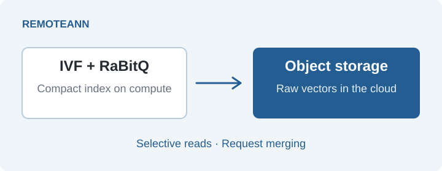
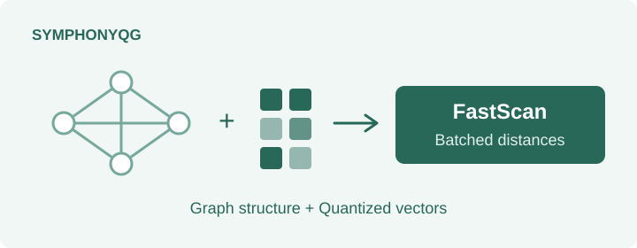

Yutong Gou
PhD student
College of Computing and Data Science
Nanyang Technological University
I build efficient vector search systems through quantization and storage-aware indexing.
About
I am a PhD student in the College of Computing and Data Science at
Nanyang Technological University, advised by
Prof. Cheng Long.
I received my bachelor’s degree from Tsinghua University.
I study vector databases, with a focus on
vector quantization and approximate nearest-neighbor search.
Selected projects
Featured open source

C++17 · Python · x86-64 / ARM64
Lead developer & primary maintainer
Official RaBitQ library with an asymptotically optimal space–error trade-off, SIMD acceleration, and integrations in txtai and zvec.
Code ›
Paper ›
Documentation ›
Cloud vector search

Cloud object storage · Vector search
Preprint · 2026
A vector search engine designed for cloud object storage, combining IVF and RaBitQ with data reordering, selective reads, and request merging to reduce network transfers and storage requests.
Paper ›
Quantization meets graph search

Graph indexing · Vector quantization
SIGMOD 2025
Co-designs graph structure and quantized distance estimation for efficient nearest-neighbor search, aligning graph traversal with FastScan batches and avoiding a separate re-ranking step.
Paper ›
Code ›
Selected publications
-
2026
Revisiting RaBitQ and TurboQuant: A Symmetric Comparison of Methods, Theory, and Experiments
Jianyang Gao, Yutong Gou, Yuexuan Xu, Jifan Shi, Yongyi Yang, Shuolin Li, Raymond Chi-Wing Wong, Cheng Long
Preprint
Paper
Code
-
2025
SymphonyQG: Towards Symphonious Integration of Quantization and Graph for Approximate Nearest Neighbor Search
Yutong Gou, Jianyang Gao, Yuexuan Xu, Cheng Long
Proceedings of the ACM on Management of Data · SIGMOD 2025
Paper
Code
-
2025
Practical and Asymptotically Optimal Quantization of High-Dimensional Vectors in Euclidean Space for Approximate Nearest Neighbor Search
Jianyang Gao, Yutong Gou, Yuexuan Xu, Yongyi Yang, Cheng Long, Raymond Chi-Wing Wong
Proceedings of the ACM on Management of Data · SIGMOD 2025
Paper
Code
-
2025
iRangeGraph: Improvising Range-dedicated Graphs for Range-filtering Nearest Neighbor Search
Yuexuan Xu, Jianyang Gao, Yutong Gou, Cheng Long, Christian S. Jensen
Proceedings of the ACM on Management of Data (2024) · SIGMOD 2025
Paper
Code
-
2024
High-Dimensional Vector Quantization: General Framework, Recent Advances, and Future Directions
Jianyang Gao, Yutong Gou, Yuexuan Xu, Jifan Shi, Cheng Long, Raymond Chi-Wing Wong, Themis Palpanas
IEEE Data Engineering Bulletin
Details
Complete publication list
Research Service
External Reviewer
- 2027: WSDM, VLDB, SIGMOD
- 2026: VLDB, ICDE, SIGMOD
- 2025: VLDB, ICDE, SIGMOD, SSTD